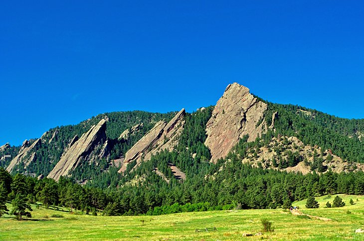

Photo of the beautiful Colorado River, a common rafting spot. Credit: Scientific American
In the Colorado wilderness, there are many things to do, and one such thing is rafting! Going rafting on the Colorado River was one of my highlights of my Colorado trip. Braving the rapids and having a thrilling experience made for a very memorable experience. Below are some more images of the valley and river itself!

Photo of one of the gorgeous mountainsides Colorado has to offer.
On one of the many mountain sides Colorado has to offer, taking advantage of the climbing opportunities is one of my go to stories to tell! Rapelling down after a successful climb is freeing, and the views are beautiful! Below are some more images of the mountainscapes and some climbers!
Homepage About Me How to get Started Restaurants Places to See Things to Do